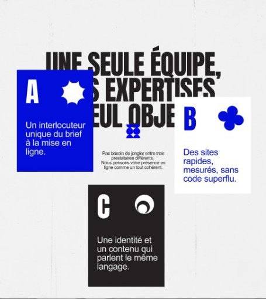
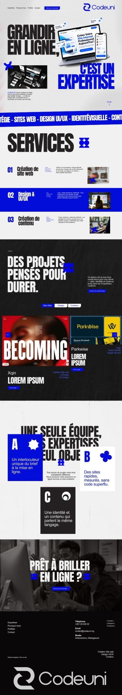

Dire l'essentiel, puis prouver.
Un titre qui annonce la promesse, trois services listés comme un sommaire, puis les projets filtrables et un appel final.



Un site vitrine éditorial, radical et rapide pour une agence qui réunit création web, design et contenu.
CodeUni accompagne les entreprises sur trois expertises : la création de site web, le design graphique et UI/UX, et la création de contenu.
Concevoir un site qui incarne ce positionnement : une seule équipe, un seul interlocuteur, et une interface qui prouve le travail avant même de l'expliquer.

Un titre massif en capitales condensées, un bleu électrique sur fond papier ou noir, et du mouvement là où il guide la lecture.
Le bleu ne sert qu'aux appels à l'action, aux numéros et aux mots qui comptent.
Capitales condensées pour l'impact, texte courant sobre pour la lecture.
Alternance de sections claires et sombres, bandeau défilant des expertises et blocs en damier pour casser la grille.

Un titre qui annonce la promesse, trois services listés comme un sommaire, puis les projets filtrables et un appel final.

Chaque expertise a son bloc : un numéro, un texte court, la liste des prestations et des mots-clés, avec une photo qui change de côté d'une ligne à l'autre. Une FAQ répond aux questions courantes avant le premier échange.


Des chiffres en tête de page, six raisons à parcourir une par une, puis un process en quatre étapes illustrées.

.jpg)
.jpg)
.jpg)
Chaque projet tient en une carte : visuel, service, titre, une ligne de contexte. Les filtres réduisent la grille sans quitter la page.
.jpg)
Fiche d'identité du projet (client, date, durée, rôle), menu latéral, galerie d'écrans, puis les autres projets en carrousel.
.jpg)

@2x.jpg)
.jpg)
Parlons de votre site, de votre identité ou de vos contenus.